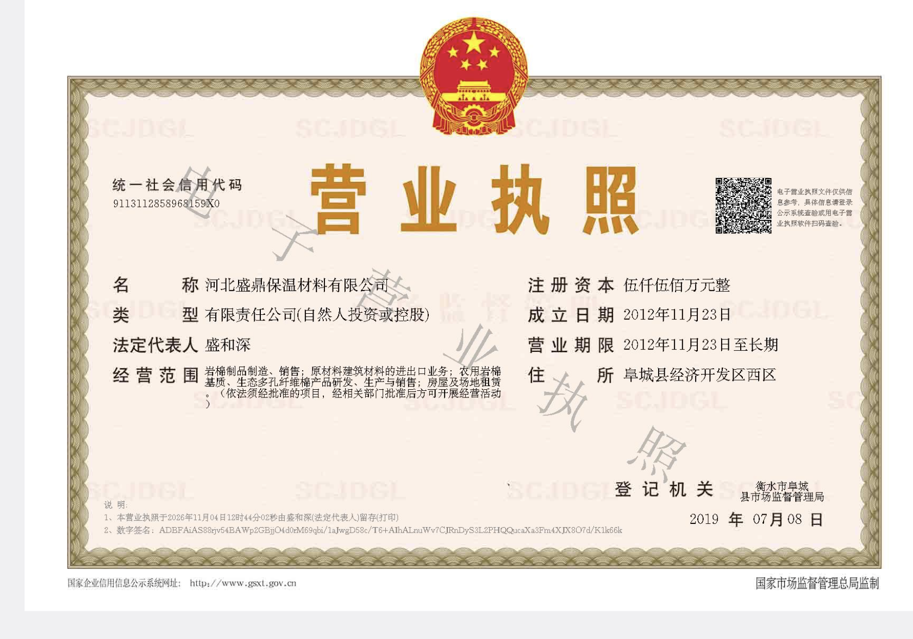
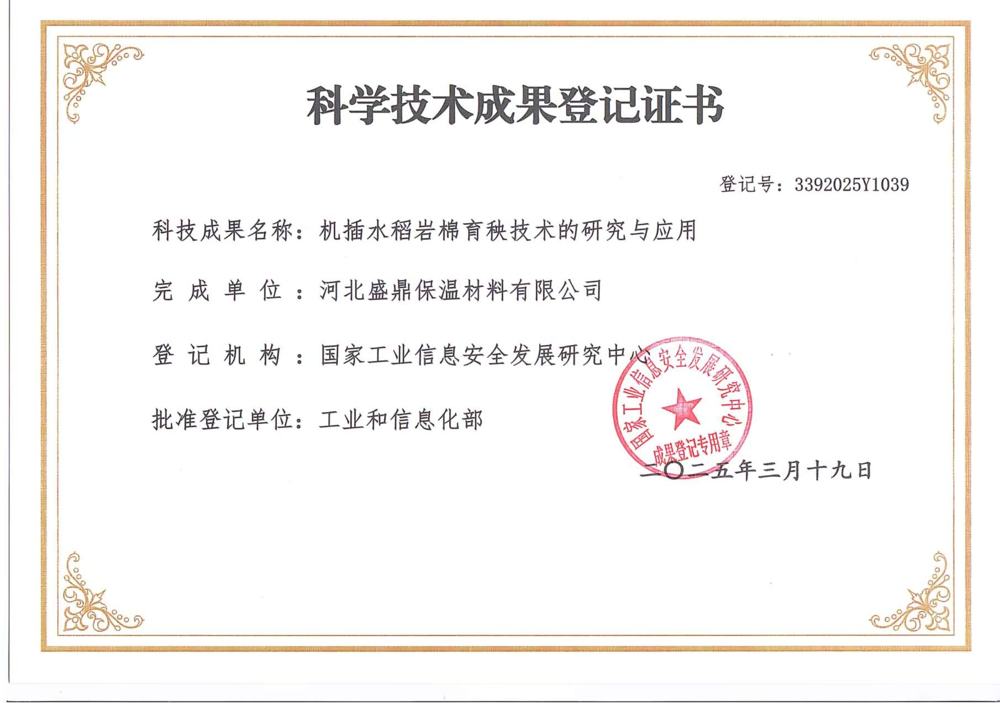

增长极
水稻育秧基质
SeedWool 水稻育秧岩棉核心产品，对标 NY/T 2118 标准，以数据平台驱动工艺迭代
核心增长极
以岩棉为基底，覆盖五大业务：增长极引领，现金牛支撑，协同线互补，长线布局，收缩聚焦
SeedWool 水稻育秧岩棉核心产品，对标 NY/T 2118 标准，以数据平台驱动工艺迭代
建筑外墙、屋面、防火隔离带岩棉板，稳定现金流支撑农业业务投入
蔬菜、瓜果育苗岩棉基质，与水稻育秧技术协同，共享产线与渠道
岩棉固沙、保水、改良土壤的长期探索，布局荒漠化治理前沿
岩棉在城市雨洪管理中的应用，当前收缩聚焦，保留技术储备
实时展示店铺热卖产品，支持在线询盘与 Trade Assurance 订单
水稻育秧垫（58×28cm）通过店铺「Chat Now / Contact Supplier」实时询价 — 货架暂未上架，正在筹备中
避让《种植用岩棉》团标与 T/NJ 1541-2026，走"水稻育秧专用岩棉"窄切口，推动 NY/T 3838-2021 修订版吸收富硅 / 抗低温 / 低碳指标
《机插水稻岩棉育秧技术的研究与应用》 — 完成单位含中国水稻研究所
国家工业信息安全发展研究中心登记，工业和信息化部批准登记
河北盛鼎保温材料有限公司 · 2012 年成立 · 注册资本 5000 万元 · 法定代表人 盛和深
三篇合著论文发表于《核农学报》《中国稻米》《作物研究》，数据可公开核验。核心数据：低温干重 +26.38%、SOD +97.42%、较专用基质增产 8.2%、凤台 9.2% / 海宁 11.1%
下载标准文档白皮书
营业执照
企业主体 · 2012 成立
省级科技成果证书
登记号 20250949
国家级科技成果登记
登记号 3392025Y1039国内首个面向水稻育秧的岩棉标准平台。三位一体：产品制造 + 标准制定者 + 数据平台。
低温下地上部干重 +26.38%、SOD +97.42%、较专用基质育秧 增产 8.2%
不做通用岩棉，只做水稻育秧专用基质。把"富硅+抗低温+增产"固化为可检测、可认证、可授权的行业标准
端到端解决方案：基质 + 根区监测 + 长势诊断 + 批次溯源
基于中国水稻研究所联合试验与田间实测数据
以下数据为示范值，最终以中国农科院实验室联合标定与正式标准为准
产学研合作建立农用岩棉栽培实验室，共同制定水稻育秧岩棉技术标准
更多合作机构持续拓展中 · 产学研深度融合打造农用岩棉核心竞争力
无论您是育秧中心、苗厂还是认证机构，都可从 SeedWool 平台获取合格基质与可核验数据
盛鼎不碰认证执行费，由第三方 CAB 检测，只收标志授权费 / 数据平台费 / 认证门户费（学 MSC 利益隔离）
📋 合规声明：页面所有农艺数据及检测指标为工程示范值，最终以中国农科院实验室联合标定与正式标准为准；公开页未刊登任何价格、毛利或 ROI 数值；正式上线前 ICP 备案号以管局核发为准
手动输入 7 项农艺指标检测值，系统自动与 SW-IND-001~007 限值比对，判定 A/B/C 等级
⚠️ 指标限值为工程示意值，最终以中国农科院实验室联合标定与正式标准为准。本页不刊登任何价格、毛利或 ROI 数值